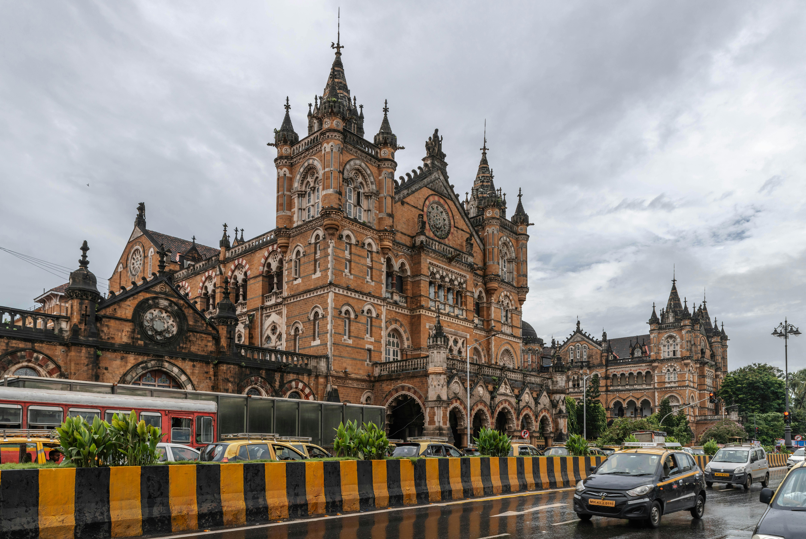

Gate Way Of India The Gateway of India is an arch-monument completed |

Chhatrapati Shivaji Maharaj Terminus Chhatrapati Shivaji Terminus, is a historic railway |

Elephanta Caves The Elephanta Caves, located in Gharapuri, is situated |

Taj Mahal The Taj Mahal Palace is a heritage, five-star, luxury |

Sanjay Gandhi National Park Sanjay Gandhi National Park is an 87 km² protected area in Mumbai, Maharashtra. It was established in 1969 with its |

Rajabai Clock tower The Rajabai Tower is a clock tower in Mumbai India. It is in the confines of the Fort campus of the University of Mumbai. It stands at a height of 85 m. |